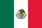
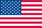
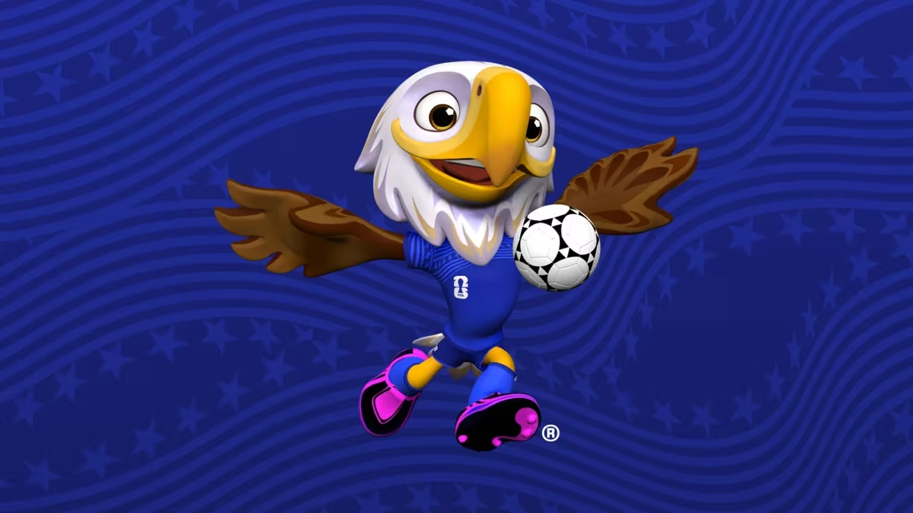
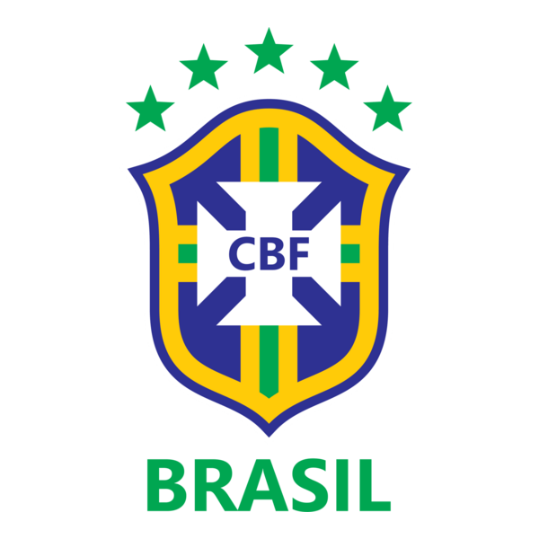

Copa 2026
Olá, Carregando...
Aguarde enquanto verificamos se os palpites estão liberados.
A Copa do Mundo FIFA 2026 será realizada nos Estados Unidos, México e Canadá, com 48 seleções participantes, tornando-se a maior edição da história do torneio.
Como funciona a pontuação?
Os pontos são calculados conforme os resultados reais forem cadastrados no sistema. Quanto mais avançada a fase, maior será a pontuação por acerto.
1º lugar exato
5 ptsAcertar exatamente quem termina em primeiro no grupo.
2º lugar exato
4 ptsAcertar exatamente quem termina em segundo no grupo.
3º lugar exato
3 ptsAcertar exatamente quem termina em terceiro no grupo.
Posição diferente
2 ptsAcertar o time no top 3 do grupo, mas em outra posição.
Grupo correto
3 ptsAcertar quais grupos terão os melhores terceiros colocados.
16 avos
2 ptsAcertar quem avança nos primeiros confrontos eliminatórios.
Oitavas
4 ptsAcertar quem avança nas oitavas de final.
Quartas
6 ptsAcertar quem avança para a semifinal.
Semifinais
8 ptsAcertar quem chega à grande final.
Campeão
15 ptsAcertar a seleção campeã da Copa do Mundo.
Vice-campeão
10 ptsAcertar a seleção que termina em segundo lugar.
Top 3 completo
20 ptsAcertar campeão, vice-campeão e terceiro lugar.
A primeira Copa com três países-sede
A edição de 2026 será histórica por reunir três países anfitriões: Canadá, México e Estados Unidos. Além disso, o torneio terá 48 seleções, ampliando a disputa e trazendo mais jogos para os torcedores.
Um torneio maior, mais longo e mais competitivo
Com mais seleções participantes, a Copa de 2026 terá mais oportunidades para países de diferentes continentes disputarem o maior torneio de futebol do mundo. Para o bolão, isso também deixa os palpites mais desafiadores e divertidos.
Canadá, México e Estados Unidos
Três países, três culturas e uma Copa do Mundo gigante. Cada país-sede terá papel importante na realização do torneio e na experiência dos torcedores.
Canadá
Conhecido por suas paisagens naturais, clima frio e paixão crescente pelo futebol, o Canadá será um dos anfitriões da Copa 2026.

México
O México tem forte tradição no futebol e será novamente palco de jogos de Copa do Mundo, com uma torcida vibrante e apaixonada.

Estados Unidos
Os Estados Unidos receberão grande parte dos jogos e contam com estádios modernos, grandes cidades e estrutura para eventos internacionais.
Como será a Copa 2026?
O formato da Copa 2026 terá 48 seleções divididas em 12 grupos com 4 equipes. Avançam os dois primeiros de cada grupo e os 8 melhores terceiros colocados.
A maior quantidade de participantes em uma edição da Copa.
Cada grupo terá quatro seleções disputando a classificação.
Avançam para o mata-mata os melhores colocados da fase de grupos.
Uma edição maior, com mais partidas e mais possibilidades no bolão.
Maple™ — O Alce
Maple™ representa o Canadá e carrega uma identidade ligada à natureza, à força e à energia do país. O alce é um animal marcante da fauna canadense, e o nome também faz referência à folha de bordo, um dos principais símbolos do Canadá.
O Canadá terá a chance de apresentar sua cultura para torcedores do mundo inteiro em uma Copa histórica e compartilhada com outros dois países da América do Norte.


Zayu™ — A Onça-Pintada
Zayu™ representa o México e simboliza energia, velocidade e presença. A onça-pintada tem forte ligação com a fauna e com elementos culturais da região, tornando o mascote uma representação marcante do país.
O México é um país com enorme paixão pelo futebol e já recebeu edições anteriores da Copa do Mundo, ficando marcado por jogos históricos.
Clutch™ — A Águia
Clutch™ representa os Estados Unidos. A águia é um símbolo muito associado ao país e transmite ideia de liderança, visão e competitividade, combinando com o clima decisivo da Copa.
Os Estados Unidos receberão jogos em grandes cidades e estádios de enorme capacidade, reforçando o tamanho e a estrutura desta edição.

História da Seleção Brasileira
A Seleção Brasileira é uma das maiores protagonistas da história da Copa do Mundo. Reconhecida mundialmente pelo futebol ofensivo, por grandes craques e por momentos inesquecíveis, o Brasil carrega uma tradição única no torneio.
Para muitos torcedores, acompanhar a Copa é também reviver memórias marcantes da amarelinha: títulos, gols históricos, ídolos eternos e a esperança de mais uma grande campanha.
